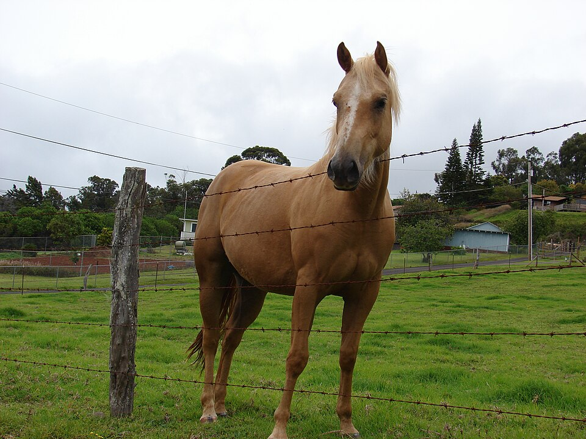

Oskie Rice Arena
Place: Oskie Rice Arena, Olinda / Upcountry Maui
Type: Rodeo arena / cultural venue
Story it tells: A community rodeo arena preserving Maui paniolo traditions and named for a rancher whose family connections reflected the overlapping histories of ranching, landownership, and Upcountry Maui culture.

Oskie Rice Arena is a rodeo arena located in Olinda near Makawao on the slopes of Haleakalā. The arena is named for Harold Frederick “Oskie” Rice, a Maui rancher, polo player, and paniolo closely associated with the ranching culture of Upcountry Maui during the mid-20th century. The arena later became home to the annual Makawao Rodeo and Fourth of July Paniolo Parade, traditions that remain closely tied to Maui’s paniolo identity today.
Rice was raised at Kaonoulu Ranch, a large Upcountry ranching property on the slopes of Haleakalā. His family connections also reflected the broader economic history of Maui. Oskie Rice was a descendant of Henry Perrine Baldwin, co-founder of Alexander & Baldwin, one of the companies that helped reshape Hawaiʻi’s economy through sugar plantations, irrigation systems, and large-scale land ownership. Over time, some of that wealth and land became tied to ranching operations across Upcountry Maui, including Kaonoulu Ranch itself.
Oskie Rice became closely associated with Maui’s paniolo traditions. He spent much of his life ranching, hunting, fishing, and participating in polo and rodeo across the islands. In 1955, Rice and others helped establish the Maui Roping Club in an effort to promote rodeo as a competitive sport in Hawaiʻi. The following year, land was provided for the construction of a rodeo arena near Makawao, creating a gathering place for Upcountry ranching families and the growing rodeo community.
Today, Oskie Rice Arena remains one of the most important rodeo venues in Hawaiʻi. Each year, the Makawao Rodeo and Fourth of July Paniolo Parade draw competitors, kamaʻāina families, and visitors from across the islands and beyond.